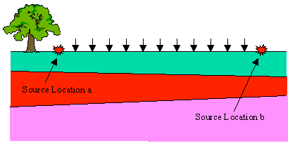
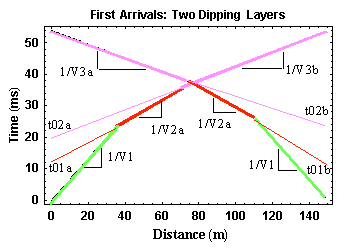

Estimating Dips and Depths From Refraction Observations
Although we could derive exact expressions from which to compute the depths and dips of multiple dipping layers from first arrival observations, for our purposes, all we really need to be able to do is to estimate these parameters from the field records. The procedure for estimating these parameters described on this page is only valid if the layers do not have excessive dips.
Like the multiple horizontal layer case, multiple dipping layers will also produce head waves that can be observed on the surface of the Earth from which subsurface Earth structure can be determined. The same caveats hold in this case concerning those structures that can not be resolved from first arrival observations.

So, in general, Earth structures like the one shown above produce travel-time curves like those shown below that can be used to estimate the depths and dips of each layer. Again, to identify the presence of dipping layers, you must acquire the data by shooting in two directions. Notice that in this example, the dip effect on the observed travel-times is quite subtle. Each layer in this model dips at a half degree.

If the dips are small, then we can estimate the structure under each source by assuming the dips are zero and by using the expressions we have already derived. After doing this for each source, we can then estimate the dip of each layer. The general flow for such a procedure would include the following:
- Determine the slope of each line segment in the observed travel-time curves for both source locations,
- The slopes of the nearest offset portions of the two travel-time curves should be equal to each other with a value of 1/V1,
- For the travel-time segments representing the refracted arrival, average the slopes of the refracted arrival traveling up dip with that of the arrival traveling down dip on each refractor. This requires that you identify on the travel-time curves those portions of the curve originating from the same boundary. In this case, you would average the slopes of the two red line segments (1/V2a and 1/V2b) and the slopes of the two purple line segments (1/V3a and 1/V3b). Use the absolute value of the slope in this calcuation,
- Compute your estimate for V2 and V3 by taking the reciprocal of the averages generated in the preceding step,
- Using these velocities, the zero intercept times at each source (t01a and t02a for the source to the left and t01b and t02b for the source to the right) and the equations given previously estimate the depth to each layer underneath each source, and
- From these depths and knowing the separation between the two sources, estimate the dip on each layer.
Remember this procedure will give you estimates of the depth to each layer and the dip on the layer. The modeling codes used in the exercise will provide more rigorous estimates that do not depend on the small dip assumption made here.
Seismology
- Simple Earth Model: Low-Velocity Layer Over a Halfspacepg 11
- Head Wavespg 12
- Records of Ground Motionpg 13
- Travel-time Curves for a Simple Earth Modelpg 14
- First Arrivalspg 15
- Determining Earth Structure from Travel Timespg 16
- Derivation of Travel Time Equationspg 17
- High-Velocity Layer Over a Halfspace: Reprisepg 18
- Picking Times of Arrivalspg 25
- Wave Propagation with Multiple Horizontal Layerspg 26
- Travel Time Curves from Multiple Horizontalpg 27
- Hidden Layerspg 28
- Head Waves from a Dipping Layer: Shooting Down Dippg 29
- Head Waves from a Dipping Layer: Shooting Up Dippg 30
- A Field Procedure for Recognizing Dipping Bedspg 31
- Estimating Dips and Depths from Travelpg 32